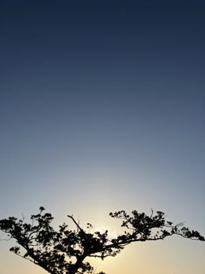
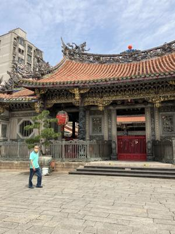
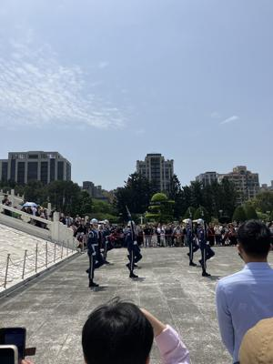
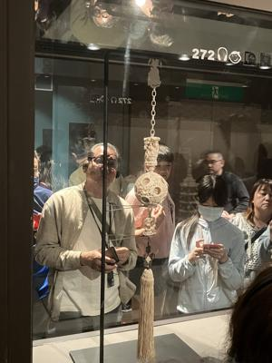
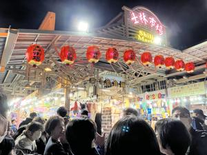
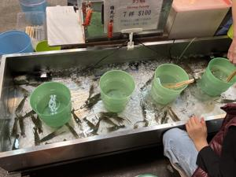

うるがいの話 ある日
最新: 観光１日目【うるがいの話 ある日】とは 一日だけのプログです
『うるがいの話』の最新一日だけのプログで、通信料が少なく経済的だ。カニの画像をクリックすると全ての日付が載る『うるがいの話』サイトを表示します
|
|
【うるがいの話】 うるがい(ｳﾙｶﾞｲ urugai)とは、『もずくがに』の名前でとても大きくなります。 |
|---|---|
|
|
【カミマヤーの話】 猫のことを方言でマヤーといいます。カミマヤー（kamimayaa）とは、神の猫のことです。 |
|
【たながぁの音楽】 たながぁ（ﾀﾅｶﾞｰ tanagaa）とは手長えびのことで、何種類かあり大きいのは車 エビぐらいになります。 |

|
【ぶながぁの話】 ぶながぁ(ﾌﾞﾅｶﾞｰ bunagaa)とは、赤い髪の毛、赤い身体、そして身長は１ｍ２０ｃｍ ぐらい、川の蟹を食べているの目撃された。場所は沖縄県国頭郡大宜味村のと ある村僕の隣近所に住んでいる爺さんから、聞いた話です。 |
|
|
【ギーマの話】 ギーマ(giima)とは、山原の里山に咲くスズランに似た、 花を付けます。実は食べられます、 気が付くと口の周りが紫になっています。 |
2025年04月08日 (火）観光１日目
18:24

朝４時に起床、子供が迎えにきて５時半に空港へ出発する。奥武山
公園の近くで、検問に引っかかる。飲酒運転かどうか、呼気検査を
される。検問は人生で２度目である、一度目は大学３年生のとき大
学祭の催しのため、私の実家の川（大兼久）で夜『たながぁ（手長
エビ）』を取った帰りである。軽自動車を運転した『キンちゃん』
が、検問の質問に答えた。
出国手続きのとき、パスポートを出すと何故か私だけ、個別の場所
で検査される。ま、問題はないということでスタンプを押される。
台湾にあっという間に到着、入国審査の質問に答えるべく、準備し
てたがスルーされた。この日は、清明節（台湾のお盆）にあたり台
湾は、木曜日から４連休で、空港はとても混雑していた。
審査の待ち行列では、入国カードをその場で記入している人たちも
いた。オンラインで事前に済ませていたので、審査時に『オンライ
ン』と答える心構えもしてたが・・・、なお、旅行パックの人達の
中には、ウェブオンライン登録後に、送られてくるメールの添付を
印刷した紙を持っている人も、かなりいた。
無難に荷物をとり、バス乗り場でツアーの人達は、集められた。し
ばらくすると、普段着をきた少し髪の毛が少ない中年男性（后さん
）が、私のところへ近づいてきた。沖縄から、同行した女性の添乗
員さんが、現地の添乗員さんと紹介する。迎えにくるバスを待って
いる間に、私は后さんに 你好（ニイハオ）と挨拶をする。后さんは
笑顔で、你好と答えてくれた。
10:34 龍山寺

この写真では人が少ないように見えるが、実際は写真と撮るのを憚
られるほど（だから写真を撮っていない）、混雑していた。
12:00 中正記念堂 儀仗兵

中正記念堂を見学したあと、広場で時間を潰していると何やら人が
集まってくる。ン？、儀仗兵の演武が始まった。添乗員からの事前
説明は無かった（今考えるとわざとか、ビックリポン）。全然期待
していなかったが、 動画をバ、スゴイ！
ちなみに動画は、私が撮ったのではない。パックで一緒の人がスマ
ホで撮っている。手帳型で、免許証と千円が入っていた！。思わず
声をかけ、私も一緒ですヨと免許証と千円が入っているスマホを見
せた。
15:36 故宮博物院

今まで行った博物館で、一番凄かった。添乗員の后さんのナレーシ
ョンが、良くて良くて。左のオジサンのように、ヘッドホンでナレ
ーションを聞く。
18:59 土林夜市

人、人、事前にスリがいるから注意して！！！と言われていたのと
疲れていたので、皆さんほとんど歩かず。
『たながぁ（手長エビ）』すくい

土林夜市では『金魚すくい』もあったが、『たながぁ、すくい』も
あった。『たながぁ、すくい』は、大学祭で同じことをやった。エ
ビが、学園際ではあっという間に無くなったが。
ホテルに着いたのが２２時前、ハードな一日が終わる。